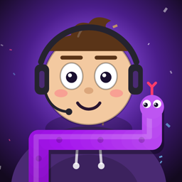

CHAT VS COBRA
Live 24h no YouTube: uma IA joga a cobrinha sozinha e o chat bagunça.
🐍 O que é
No canal @chatvscobra, um jogo da cobrinha é jogado o tempo todo por uma inteligência artificial. Quem assiste interfere: manda 🍎 no chat pra jogar maçãs, chuta o tamanho final da rodada, vota no próximo evento e envia presentes que viram bombas, turbo ou game over.
🔌 O app "Cobrinha ao vivo"
É o programa que roda no computador do próprio canal durante a live. Com permissão somente de leitura da conta do canal, ele lê o chat público da transmissão, os presentes e as curtidas e repassa tudo pro jogo que aparece na tela. Ele não publica, não apaga e não altera nada no YouTube.
Veja como os dados são tratados na Política de Privacidade.
🎮 Comandos do chat
🍎 !maçã !manzana !apple · !palpite 300 !apuesta 300 !guess 300 · !1 !2 !3 · !ajuda !ayuda !help